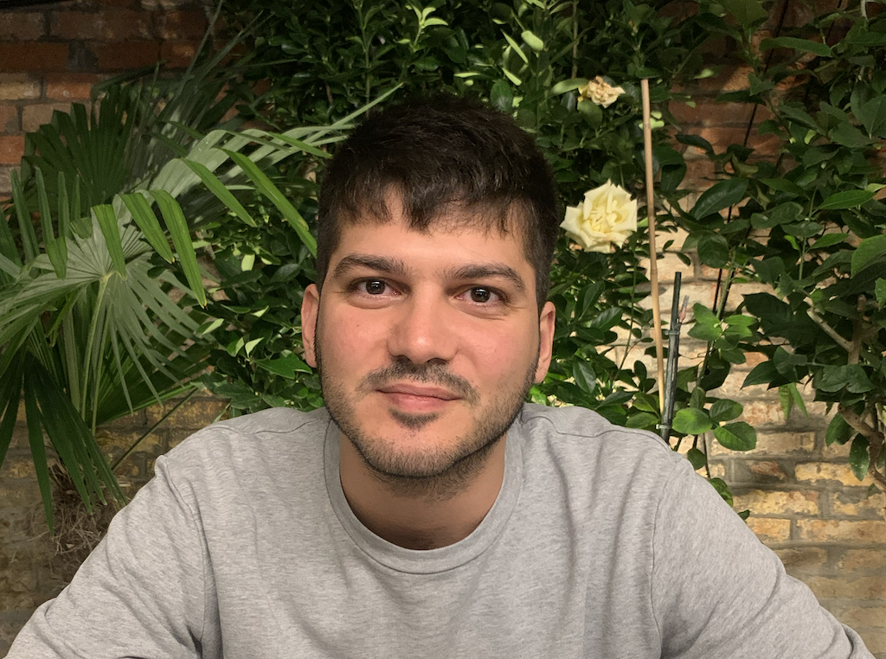

Gianluca Mosca

Profilo:
Sono un full-stack web developer junior.
Formazione:
- Diploma di scuola superiore come perito elettrotecnico presso "ITIS" E. Mattei (2011).
Esperienza Lavorativa:
Competenze:
- Conoscenza delle principali funzioni del linguaggio HTML
- Problem solving
Certificazioni:
- Corso full-stack web developer bootcamp (Udemy).
Atro: